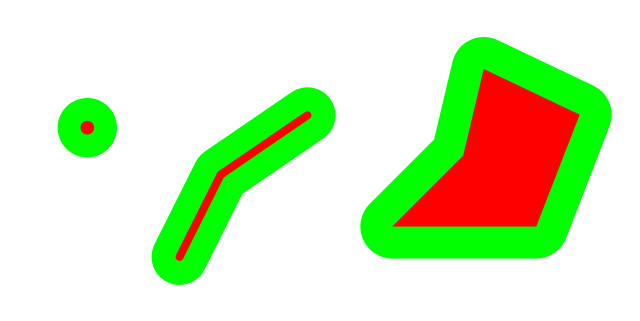
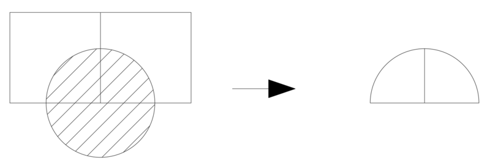
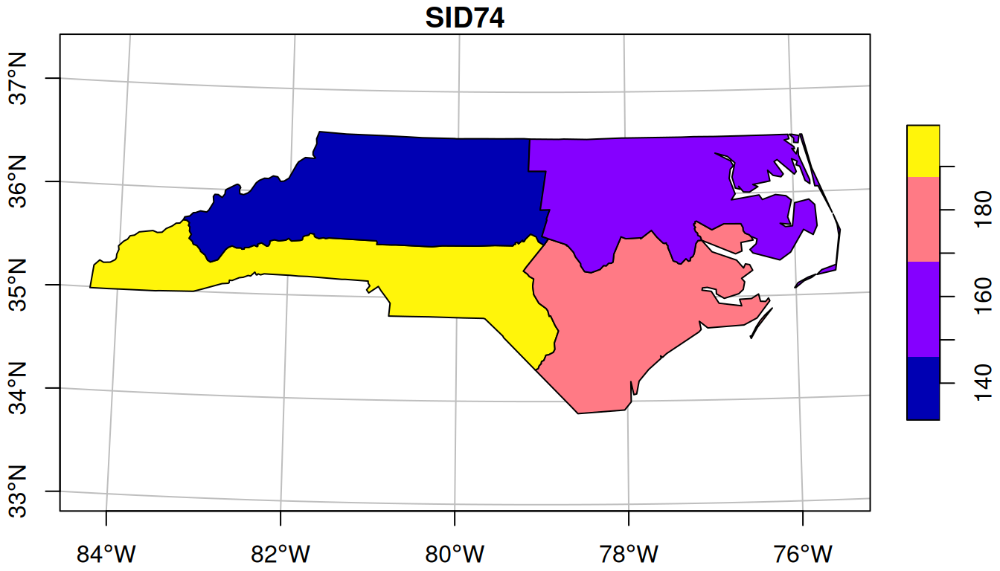

Preprocessing
Misc
- Packages
- {photon} - High-Performance Geocoding using photon
- {apache.sedona} - Sparklyr extension for processing geospatial data
- Resources
- Geocomputation with R, Ch.8 File Formats
- Conflation Types (i.e. geospatial joins)
- Notes fromConflating Overture Places Using DuckDB, Ollama, Embeddings, and More
- Recommends using String Similarity. Then use Embeddings on the remaining unmatched. Shows an 80% match. Can get about 90% by raising the similarity threshold, but it increases the amount of false positive matches.
- Exact Name Matching (e.g. by name variable
- Article example had a ~31% match rate
- String Similarity (e.g. address variable + Jaro-Winkler distance)
- Article example had a ~68% match rate
- Embeddings (e.g. embed name variable + cosine similarity)
- Article example had a ~71% match rated
- Notes fromConflating Overture Places Using DuckDB, Ollama, Embeddings, and More
File Types
GeoPackage - Defined as a SQLite 3 database file with a specific database schema and with filename extension
.gpkg. The schema defines data and metadata tables with specified definitions, integrity assertions, format limitations and content constraints (wiki)- Designed to be as lightweight as possible and be contained in one ready-to-use single file. This makes it suitable for mobile applications in disconnected mode and rapid sharing on cloud storage, USB drives, etc.
- The GeoPackage extension F.3 RTree Spatial Indexes specifies how to use SQLite spatial indexes in order to speed up performance on spatial queries compared to traditional geospatial files formats.
PMTiles - A single-file archive format for tiled data. A PMTiles archive can be hosted on a commodity storage platform such as S3, and enables low-cost, zero-maintenance map applications that are “serverless” - free of a custom tile backend or third party provider. (Docs) (Example w/{mapgl})
- Run your interactive, smooth-zooming vector map from any storage like S3 that supports http requests; a Caddy server running on your Wi-Fi router, or even GitHub pages (if tiles < 1GB).
- Cloudflare R2 is the recommended storage platform for PMTiles because it does not have bandwidth fees, only per-request fees: see R2 Pricing.
Shape Files
Read in only the attributes table using
foreign::read.dbfif you don’t need the geometries (source)Read in the full spatial data and drop the geometry using
sf::st_drop_geometryorterra::values(source)- These pull out the data frame, so if you assigned it to a different object you have to remove the spatial object
Validate geometries when loading a shape file
NY8_sf <- st_read(system.file( "shapes/NY8_bna_utm18.gpkg", package = "spData"), quiet = TRUE) # validate geometries table(st_is_valid(NY8_sf)) #> TRUE #> 281- If
st_is_validreturns FALSE, then you can runst_make_valid
- If
Example: Counties in California
tbl <- tigris::counties(state = "CA") %>% st_set_crs(4326){tigris} - US data
library(tigris) us_states <- states(resolution = "20m", year = 2022, cb = TRUE) lower_48 <- us_states %>% filter(!(NAME %in% c("Alaska", "Hawaii", "Puerto Rico"))){rnaturalearth} - World data
# Via URL # Medium scale data, 1:50m Admin 0 - Countries # Download from https://www.naturalearthdata.com/downloads/50m-cultural-vectors/ world_map <- read_sf("ne_50m_admin_0_countries/ne_50m_admin_0_countries.shp") %>% filter(iso_a3 != "ATA") # Remove Antarctica # Via Package library(rnaturalearth) # rerturnclass = "sf" makes it so the resulting dataframe has the special # sf-enabled geometry column world_map <- ne_countries(scale = 50, returnclass = "sf") %>% filter(iso_a3 != "ATA") # Remove Antarctica
GeoJSON
Write data to geojson
data %>% st_write("mb_shapes.geojson")
CSV to Dataframe (source)
# points localidad <- st_as_sf(localidad, coords = c("longitude", "latitude"), crs = 4326) # polygons departamentos <- st_as_sf(departamentos, wkt = "geomTDepartamento")- wkt is the column that holds WKT encoded geometries
Read only data within a bounding box
Filtering during read can be much faster than “read then filter” if the file has a spatial index
From a URL (source)
# URL to the wind turbine database url <- "/vsizip//vsicurl/https://ftp.cartes.canada.ca/pub/nrcan_rncan/Wind-energy_Energie-eolienne/wind_turbines_database/wind_turbine_database_en.gdb.zip" # List layers in the dataset st_layers(url) # Read and transform the area of interest area_bdd <- read_sf(fs::path("data", "area.geojson")) |> st_transform(crs = st_crs(pts)) # Convert the area geometry to WKT wkt_bdd <- area_bdd |> st_geometry() |> st_as_text() # Read the filtered dataset using the bounding box dat_bdd <- read_sf(url, wkt_filter = wkt_bdd)- Also see Databases, DuckDB >> Extensions >> Geospatial for an example of filter by bounding box through a DuckDB query
From a file (source)
bounds_lonlat <- st_bbox( c(xmin = -64.6418, xmax = -64.2868, ymin = 44.8473, ymax = 45.0151), crs = st_crs("OGC:CRS84") ) # Read the CRS of the source elevation_crs <- st_layers("data/ns-water_elevation.fgb")$crs[[1]] # Transform the bounds to the CRS of the source bounds_poly <- bounds_lonlat |> st_transform(elevation_crs) |> st_as_sfc() # Read just the data you need elevation <- st_read( "data/ns-water_elevation.fgb", wkt_filter = st_as_text(bounds_poly) )
Big Data
Misc
- If your computation takes in the 30 sec to a few minutes range, then use duckdb and its spatial extensions (See Databases, DuckDB >> Geospatial, Apache >> Arrow >> Misc >> {geoarrow})
- If your compution take closer to 10 to 20 minutes or more, then use Apache Sedona (See package in Misc)
- Sedona can do parallelized joins.
- geoparquet (vector) and COGS (raster) allow users to only download what they need and not the entire set of files.
Fast read
library(vapour) library(geos) elevation <- vapour_read_geometry("data/ns-water_elevation.fgb") |> geos_read_wkb(crs = st_crs(lakes))Use a SQL query to reduce the data read into memory (source)
With {sf} and with a bounding box
high_capacity <- read_sf( url, wkt_filter = wkt_bdd, query = "SELECT * FROM wind_turbine WHERE Turbine_Rated_Capacity__kW_ > 4000" )- wind_turbine is a layer discovered using
st_layersin the previous example
- wind_turbine is a layer discovered using
With {terra}
f <- system.file("ex/lux.shp", package="terra") v <- vect(f) v #> class : SpatVector #> geometry : polygons #> dimensions : 12, 6 (geometries, attributes) #> extent : 5.74414, 6.528252, 49.44781, 50.18162 (xmin, xmax, ymin, ymax) #> source : lux.shp #> coord. ref. : lon/lat WGS 84 (EPSG:4326) #> names : ID_1 NAME_1 ID_2 NAME_2 AREA POP #> type : <num> <chr> <num> <chr> <num> <num> #> values : 1 Diekirch 1 Clervaux 312 1.808e+04 #> 1 Diekirch 2 Diekirch 218 3.254e+04 #> 1 Diekirch 3 Redange 259 1.866e+04 v <- vect(f, query="SELECT NAME_1, NAME_2, ID_2 FROM lux WHERE ID_2 < 4")
Use lazy evaluation via {terra}
As a SpatVectorProxy
f <- system.file("ex/lux.shp", package="terra") v <- vect(f, proxy=TRUE) v #> class : SpatVectorProxy #> geometry : polygons #> dimensions : 12, 6 (geometries, attributes) #> extent : 5.74414, 6.528252, 49.44781, 50.18162 (xmin, xmax, ymin, ymax) #> source : lux.shp #> coord. ref. : lon/lat WGS 84 (EPSG:4326) #> names : ID_1 NAME_1 ID_2 NAME_2 AREA POP #> type : <num> <chr> <num> <chr> <num> <num> summary(v) # reads only metadata v[1:5, ] # reads just a few features x <- query(v, vars=c("ID_2", "NAME_2"), start=5, n=2) x #> class : SpatVector #> geometry : polygons #> dimensions : 2, 2 (geometries, attributes) #> extent : 5.74414, 6.528252, 49.72324, 50.03632 (xmin, xmax, ymin, ymax) #> source : lux.shp #> coord. ref. : lon/lat WGS 84 (EPSG:4326) #> names : ID_2 NAME_2 #> type : <num> <chr> #> values : 5 Wiltz #> 6 Echternach- Using proxy = TRUE, allows you to reference a spatial vector dataset (like a shapefile or GeoPackage layer) without actually reading all the data into memory. This is especially useful when working with large datasets that don’t fit comfortably into RAM.
Reduce Size Via SQL Query
Uses OGR SQL (SQLite might also be accepted)
Choose Layer
library("sf") st_layers("data/Lower_layer_Super_Output_Areas_2021_EW_BGC_V3.gpkg") ## Driver: GPKG ## Available layers: ## layer_name geometry_type features fields crs_name ## 1 LSOA_2021_EW_BGC_V3 Multi Polygon 35672 7 OSGB36 / British National Grid- This file only has one layer
Get an idea of the columns in the layer by looking at the first row.
st_read("data/Lower_layer_Super_Output_Areas_2021_EW_BGC_V3.gpkg", query = "SELECT * FROM LSOA_2021_EW_BGC_V3 WHERE FID = 1", quiet = TRUE) ## Simple feature collection with 1 feature and 7 fields ## Geometry type: MULTIPOLYGON ## Dimension: XY ## Bounding box: xmin: 531948.3 ymin: 181263.5 xmax: 532308.9 ymax: 182011.9 ## Projected CRS: OSGB36 / British National Grid ## LSOA21CD LSOA21NM BNG_E BNG_N LONG LAT ## 1 E01000001 City of London 001A 532123 181632 -0.09714 51.51816 ## GlobalID SHAPE ## 1 {1A259A13-A525-4858-9CB0-E4952BA01AF6} MULTIPOLYGON (((532105.3 18...- FID = 1 says look at the first row. FID is the feature ID attribute. I don’t think it’s actual column in the dataset.
Query the layer and filter
st_read("data/Lower_layer_Super_Output_Areas_2021_EW_BGC_V3.gpkg", query = "SELECT * FROM LSOA_2021_EW_BGC_V3 WHERE LSOA21CD LIKE 'W%'", quiet = TRUE)- W% says looks for values that start with “W” (Wales) in the LSOA21CD column
- Based on the OCR SQL docs I think
%is wildcard for multiple characters.
- Based on the OCR SQL docs I think
- W% says looks for values that start with “W” (Wales) in the LSOA21CD column
Use a bounding box to filter overlapping geometries
Example: Filter polygons overlapping the boundaries of Wales
Filter Wales from a UK shapefile dataset
uk <- sf::st_read("data/Countries_December_2022_GB_BGC.gpkg") wales <- dplyr::filter(uk, CTRY22NM == "Wales")Create Wales polygon
wales_wkt <- wales |> sf::st_geometry() |> sf::st_as_text()Filter overlapping geometries
wales_lsoa <- sf::st_read("data/Lower_layer_Super_Output_Areas_2021_EW_BGC_V3.gpkg", wkt_filter = wales_wkt)- Some English LSOAs along the Wales/England border in addition to the Welsh LSOAs are read in, because these technically overlap with the Wales polygon on the border itself. Not perfect but still reduces the data being read into memory.
Projections
Misc
- Resources
- Google “epsg code” + “your region name” to find a reasonable projection code to use
- Spatial Reference
- Formats
- epsg: The EPSG code (if available), a standardized code for coordinate systems.
- proj4string: A text string defining the projection parameters in PROJ.4 format.
- wkt: The Well-Known Text representation of the CRS.
- OGC (Open Geospatial Consortium) vs WGS (World Geodetic System)
- Both are same except for axis order
- WGS84 (EPSG:4326) uses latitude/longitude order (y,x)
- Traditional axis order used by cartographers and geographers throughout history
- CRS84 (OGC:CRS84) uses longitude/latitude order (x,y)
- Adopted since many mathematical and computational systems conventionally list x first, then y.
- Example:
st_transform(data, "OGC:CRS84")
- With data that’s in an older coordinate system, transformation instructions to a more modern system might be included in the output (wkt text) of the
st_crs- SOURCECRS: Your actual current coordinate system (e.g. UTM Zone 18N with Clarke 1866 datum)
- TARGETCRS: The reference system you’ll be in after the transformation (e.g. WGS84)
- ABRIDGEDTRANSFORMATION: Instructions for converting between the source and target systems

Geographic Coordinates
AKA geodetic coordinates
Required for Great Distance and Spherical Distance calculations
WGS 84
EPSG:4326
Most common for global datasets. Used by most web mapping services and GPS devices
Required by leaflet
Formats
st_transform(data, "EPSG:4326") # Most common st_transform(data, "WGS84") # Also works st_transform(data, "+proj=longlat +datum=WGS84") # Seen in older code before epsg st_transform(data, 4326) # epsg value
EPSG:4269 (NAD83):
Official US standard: NAD83 is the official horizontal datum used by US federal agencies and most state/local governments for mapping and surveying within the continental United States.
Specifically designed for North America and provides slightly better positional accuracy for the continental US than WGS84.
Convert dataframe with latitude and longitude to a sf object with geometries
new_tbl <- old_tbl # contains latitude and longitude variables # convert to simple features object sf::st_as_sf( coords = c("<longitude_var>", "<latitude_var>"), # order matters crs = 4326 ) %>% mapviw::mapview()Transform a sf object to WSG84 coordinates
us_states <- us_states %>% # df with geometries sf::st_transform("EPSG:4326") # WGS 84
Projected Coordinates
Used for Planar Distance calculations
Packages
- {albersusa} - Tools, Shapefiles & Data to Work with an ‘AlbersUSA’ Composite Projection
United States:
- States
- Each state also has its own State Plane coordinate system
- States also have zones that zoom into a particular region of the state. Each will have it’s own EPSG.
- Alaska has 10 zones (most of any state)
- Texas has 5 zones
- California has 6 zones
- Florida has 3 zones
- Rhode Island has just 1 zone (like many smaller states)
- There also are separate projections for feet and meters
- Example: Hawaii Zone 3
- EPSG:6633, NAD83(PA11) / Hawaii zone 3 (feet)
- EPSG:6630, NAD83(PA11) / Hawaii zone 3 (meters)
- Example: Hawaii Zone 3
- Hawaii EPSG:6320 NAD83(PA11)
- Alaska EPSG:6393: NAD83(2011)
- Continental/Contiguous US (CONUS), i.e. 48 states:
- Use EPSG:6350 as it is the most current and most accurate
- Timeline on the CONUS projections
- EPSG:5069: NAD27 / Conus Albers; Replaced by NAD83 EPSG:5070
- EPSG:5070: NAD83 / Conus Albers; For applications with an accuracy of better than 1m, replaced by NAD83(HARN) EPSG:5071
- EPSG:5071: NAD83(HARN) / Conus Albers; Replaced by NAD83(NSRS2007) EPSG:5072
- EPSG:5072: NAD83(NSRS2007) / Conus Albers
- EPSG:6350: NAD83(2011) / Conus Albers; Replaces NAD83(NSRS2007) / Conus Albers
- Snyder’s GS48 (StackEx, Example): Not sure how its accuracy compares to NAD83, but it looks good on a map.
- Only supported via proj string,
st_transform(crs = "+proj=gs48")
- Only supported via proj string,
- North American Terrestrial Reference Frame of 2022 (NATRF2022). These new datums will replace NAD83 and are expected to be released in 2025. Once these datums are adopted, new projections (e.g., Albers or UTM) will likely be defined for CONUS using the updated reference frames.
- States
Europe:
- ETRS89-LAEA (EPSG:3035) is commonly used for pan-European analysis
- Individual countries often have their own systems
- e.g. British National Grid OSGB36 (EPSG:27700)
NAD83, Albers, Mercator, Robinson

library(patchwork) p1 <- ggplot() + geom_sf(data = lower_48, fill = "#0074D9", color = "white", linewidth = 0.25) + coord_sf(crs = st_crs("EPSG:4269")) + # NAD83 labs(title = "NAD83 projection") + theme_void() + theme(plot.title = element_text(hjust = 0.5, family = "Overpass Light")) p2 <- ggplot() + geom_sf(data = lower_48, fill = "#0074D9", color = "white", linewidth = 0.25) + coord_sf(crs = st_crs("ESRI:102003")) + # Albers labs(title = "Albers projection") + theme_void() + theme(plot.title = element_text(hjust = 0.5, family = "Overpass Light")) p3 <- ggplot() + geom_sf(data = world_map, fill = "#FF4136", color = "white", linewidth = 0.1) + coord_sf(crs = st_crs("EPSG:3395")) + # Mercator labs(title = "Mercator projection") + theme_void() + theme(plot.title = element_text(hjust = 0.5, family = "Overpass Light")) p4 <- ggplot() + geom_sf(data = world_map, fill = "#FF4136", color = "white", linewidth = 0.1) + coord_sf(crs = st_crs("ESRI:54030")) + # Robinson labs(title = "Robinson projection") + theme_void() + theme(plot.title = element_text(hjust = 0.5, family = "Overpass Light")) (p1 | p2) / (p3 | p4)
Python
Example: Filter Data based on a polygon using latitude and longitude data
Get California’s polygon
import osmnx import geopandas as gpd place = "California, USA" gdf = osmnx.geocode_to_gdf(place) # Get the target geometry gdf = gdf[["geometry", "bbox_north", "bbox_south", "bbox_east", "bbox_west"]]Filter data according the polygon geometry
from shapely.geometry import Point # Convert to a GeoDataFrame with Point geometry geometry = [Point(xy) for xy in zip(df['Longitude'], df['Latitude'])] earthquake_gdf = gpd.GeoDataFrame(df, geometry=geometry, crs='EPSG:4326') # Filter to keep only points within the California bounding box points_within_california = gpd.sjoin(earthquake_gdf, gdf, how='inner', predicate='within') # Select latitude, longitude etc. columns df = points_within_california[['id', 'Latitude', 'Longitude', 'datetime', 'properties.mag']]- Latitude and longitude are converted to point geometry to match the polygon point geometry
- An inner join is used on the data and california polygon to get the points that are only in California.
sf
Misc
- Docs, tidyverse methods for sf objects
- Notes from A Crash Course in Geographic Information Systems (GIS) using R
- GEOS and S2 are engines
Some arguments work with different versions
Check versions
sf_extSoftVersion()["GEOS"] #> GEOS #> "3.12.1" packageVersion("s2") #> [1] ‘1.1.7’
Measures
Distances
st_crs(sf_obj)$unitstells what unit of measurement is that coordinate system- Planar Distances (Euclidean, feet or meters, projected coordinates)
- If your study area is small (e.g., a city block, a small park), the difference between planar and Great Circle distances will be minimal, and planar distances are usually sufficient
- “For a city-sized area like Chicago, which spans roughly 15 km east-west and 25 km north-south, the distortion from using planar distance with raw lat/lon coordinates would be relatively small. At Chicago’s latitude (approximately 41.8°N), and over such short distances, the error compared to Great Circle distance would typically be less than 1%. errors of several kilometers for distances measured across the state.”
- Uses Planar (projected) Coordinate Systems,
- UTM (Universal Transverse Mercator): Divides the Earth into 60 zones, each 6 degrees of longitude wide. Each zone has its own origin and projection parameters designed to minimize distortion within that zone.
- e.g. UTM Zone 18N
- State Plane Coordinate System: Used in the United States, each state (or sometimes a portion of a state) has its own projection and parameters optimized for that specific area
- UTM (Universal Transverse Mercator): Divides the Earth into 60 zones, each 6 degrees of longitude wide. Each zone has its own origin and projection parameters designed to minimize distortion within that zone.
- Great Circle Distances (latitude, longitude, degrees, geodetic coordinates)
- The shortest distance between two points along a great circle (a circle that divides the sphere into two equal hemispheres). It’s the most accurate for Earth-based calculations.
- If your study area is large (e.g., a state, a country, multiple continents), the Earth’s curvature becomes significant, and you must use Great Circle distances.
- Uses Geographic (angular) Coordinate Systems
- A latitude and longitude system in degrees, which are angles measured on the Earth’s surface. They are inherently spherical (or more accurately, ellipsoidal).
- e.g. WGS 84 (World Geodetic System 1984), a widely used geographic coordinate system based on the WGS 84 ellipsoid with EPSG code 4326
- Spherical Distances (latitude, longitude, km)
- Measured along a small circle parallel to the equator (constant latitude). This is simpler to calculate (euclidean vs trigonometric) than Great Circle distance, but less accurate, especially at high latitudes.
- Unless you’re working with real-time calculations or massive datasets (millions of pairs of points), the computational savings probably wouldn’t justify the trade-off in accuracy.
- Latitude is treated as a straight-line distance rather than accounting for the curvature of the Earth, which is why it’s less accurate than Great Circle distance at high latitudes.
- Measured along a small circle parallel to the equator (constant latitude). This is simpler to calculate (euclidean vs trigonometric) than Great Circle distance, but less accurate, especially at high latitudes.
Points in Polygons
st_centroid- Finds the point in the center of a polygonThis could be in a body of water (i.e. outside the polygon) for some oddly shaped boundaries such as counties with coastal inlets or bays, or gerrymandered districts, etc.
Example
# spherical NY8_sf <- st_read( system.file("shapes/NY8_bna_utm18.gpkg", package = "spData"), quiet = TRUE ) NY8_ct_sf <- st_centroid( st_geometry(NY8_sf), of_largest_polygon = TRUE ) # planar st_is_longlat(NY8_ct_sf) #> [1] FALSE ny8_crs <- st_crs(NY8_sf) # Set the CRS of the centroid geometry NY8_ct_sf_sph <- st_set_crs(NY8_ct_sf, ny8_crs) # spherical st_is_longlat(NY8_ct_sf) #> [1] TRUE
st_point_the_surface- Guarantees that the point will fall on the surface of a member polygon. (Code is the same asst_centroid)- The point won’t necessarily be near the center.
- Can generate random points in a polygon for labels
Generate a (potentially) more central point guaranteed to be within the polgon
ny8_circs <- st_inscribed_circle(st_geometry(NY8_sf), nQuadSegs = 0) NY8_cic_sf <- st_cast(ny8_circs, to = "POINT")st_inscribed_circle: Calculates the largest circle that can fit entirely within each geometry in NY8_sf.- nQuadSegs controls the number of segments used to approximate the circle. When set to 0, it returns a 2-point LINESTRING (center point and a point on the circle). This representation is more accurate (center + radius) and efficient than using a polygon. This setting is only available for GEOS >= “3.9.0”. In general, a higher value (e.g. default = 30) results in a smoother polygon.
st_cast: Converts the 2-point LINESTRING to just a (center) point (to = “POINT”)
Transformations
Buffer
-
st_crs(icbc_crash_van)$units #> [1] "m" crash_buffer_icbc <- st_buffer(icbc_crash_van, dist = 150) mapview(crash_buffer_icbc) # or ggplot() + geom_sf(icb_crash_van, fill = "lightblue") + geom_sf(crash_buffer_icbc, fill = "red")For geodetic coordinates, dist is specified in meters unless you have
sf_use_s2set to FALSE. In that case, it’s in degrees.For projected coordinates, dist is in the units of those coordinates
Union
Intersection
-
intersect_van_census_crash_buffer <- st_intersection(census_intersects_cntrd, crash_buffer_icbc) average_income_by_crash_buffer <- intersect_van_census_crash_buffer |> group_by(uniqid) |> summarise(average_income = mean(v_CA16_2397, na.rm = TRUE)) plot(average_income_by_crash_buffer["average_income"])
-
{kind=link}
{kind=link}
{kind=link}
{kind=link}
{kind=link}
{kind=link}
Aggregations
Misc
- AKA Conservative Region Aggregation or Regridding
- Considers the area of overlap of the source and target geometries, and uses that to weigh the source attribute values into the target value
- Notes from Spatial Data Science, Ch. 5
Methods
- Sub-Areas (\(S_{ij}\)) are the geometries of the original variable values (smaller than Target Areas).
- Target Areas (\(T_{ij}\)) are the new larger geometries that will be the support for the aggregated variable
- Aggregating Extensive Variables
- Formula
\[ \begin{align} &\hat Y_{j}(T_j)= \sum_{i=1}^p \frac{|A_{ij}|}{|S_i|} Y_i (S_i) \\ &\text{where} \;\; A_{ij} = T_j \cap S_i \end{align} \] - Process
- Calculate intersection area betweem the sub-area (\(S_{i}\)) and the target area (\(T_{j}\)) .
- Calculate the proportion of the intersected area (\(A_{ij}\)) to the sub-area (\(S_{i}\))
- Multiply that proportion (\(|A_{ij}|\;/\;|S_i|\)) times the variable (\(Y_i (S_i)\)) to get the target subarea variable value.
- Repeat for \(p\) sub-areas
- Sum all target subarea variable values to get the target area variable value (\(\hat Y_{j}(T_j)\))
- Formula
- Aggregating Intensive Variables
- The assumption is that the variable has a constant value over each sub-area (\(S_i\)), and therefore has that same value for the intersection with target area (\(T_j\))
- Formula
\[ \begin{align} &\hat Y_{j}(T_j)= \sum_{i=1}^p \frac{|A_{ij}|}{|T_i|} Y_i (S_i) \\ &\text{where} \;\; A_{ij} = T_j \cap S_i \end{align} \]- The difference here is the weight is the proportion of the intersection \(A_{ij}\) to the target area (\(T_j\))
Examples
Example 1: Aggregate extensive variable into quadrants (source)
library(dplyr); library(sf) nc <- read_sf(system.file("gpkg/nc.gpkg", package = "sf")) # create quadrant indicators using two logicals nc$lng <- st_coordinates(st_centroid(st_geometry(nc)))[,1] > -79 nc$lat <- st_coordinates(st_centroid(st_geometry(nc)))[,2] > 35.5 # sum variable by quadrant indicators nc.grp1 <- aggregate(x = nc["SID74"], by = list(nc$lng, nc$lat), FUN = sum) |> (\(d) d[order(d$SID74), ])() # or nc.grp2 <- nc |> group_by(lng, lat) |> summarize(SID74 = sum(SID74)) |> arrange(SID74) nc.grp1["SID74"] |> st_transform('EPSG:32119') |> plot(graticule = TRUE, axes = TRUE)- SID74 is a disease incidence (count) variable
- Counties are grouped by their position (according to the quadrant in which the county centroid is with respect to ellipsoidal coordinate POINT(-79, 35.5)
- If you look at the sf docs for the sf tidyverse functions (See Misc) under the do_union argument, it says, “Using
st_unionresolves internal boundaries, but in case of unioning points, this will likely change the order of the points.”- Therefore, when you compare the output between
aggregateandgroup_by+summarize, the first sets of the points in the geometry column cells will likely be different. That will be because the pairs of points in each polygon are listed in different orders and not because the resulting geometries are different. - In this example, I could not see any difference in the plotted objects whether the union was done via the base R way or the dplyr way.
- Therefore, when you compare the output between
Example 2: Aggregate Multiple Intensive Variables (SDS Ch.16)
This is the Boston housing dataset. NOX is nitrous oxide pollution measurement and NOX_ID is the ID variable for the area where the measurement took place. CHAS is an indicator of whether the tract is close to the Charlestown river.
The variables are at the census tract level and the goal here is to aggregate them to the NOX measurement area using NOX_ID.
In this example I show a couple base R options and a dplyr option Continued in Example 3
pacman::p_load( dplyr, sf, spData ) boston_506 <- sf::st_read(system.file("shapes/boston_tracts.gpkg", package = "spData")[1], quiet = TRUE) boston_506$CHAS <- as.factor(boston_506$CHAS) # just cleaning- The {sf} docs say that {dplyr} needs to be loaded, but if need be, I think you could just use dplyr::function syntax and be fine.
ls_nox_ids <- list(as.character(boston_506$NOX_ID)) 1boston_96 <- aggregate(x = boston_506[, "NOX_ID"], by = ls_nox_ids, FUN = unique) boston_96$NOX <- aggregate(boston_506$NOX, ls_nox_ids, mean)$x boston_96$CHAS <- aggregate(as.integer(boston_506$CHAS)-1, # as.integer makes its values (1,2) ls_nox_ids, max)$x # or 2boston_96_2 <- aggregate(boston_506[, "NOX"], ls_nox_ids, mean) colnames(boston_96_2)[1] <- "NOX_ID" boston_96_2$CHAS <- aggregate(as.integer(boston_96_2$CHAS)-1, # as.integer makes its values (1,2) ls_nox_ids, max)$x # or 3boston_96_d <- boston_506 |> group_by(NOX_ID) |> summarize(NOX = mean(NOX), CHAS = max(as.integer(CHAS) - 1))- 1
- Option 1: The first aggregate call is just to perform the union of the geometries . The next couple aggregate calls aggregate the variables and add them to the first one.
- 2
-
Option 2: Union the geometries and aggregate one of the variables at the same time. aggregate automatically creates a generic grouping variable name which can be replaced with NOX_ID by
colnames - 3
-
Option 3: Use sf’s custom dplyr methods to do everything in a few lines. You could probably get
aggregateto handle multiple functions with a udf having conditionals, but I’m going to let that be for now.
Base Map Comparison
mapsf::mf_map(boston_506) # origninal data mapsf::mf_map(boston_96) # base r aggregation mapsf::mf_map(boston_96_d) # dplyr aggregation- No differences detected in the unioned geometries
Neighbors Comparison
library(spdep) nb_q_96 <- spdep::poly2nb(boston_96) nb_q_96_d <- spdep::poly2nb(boston_96_d) boston_96_ct <- st_centroid(st_geometry(boston_96), of_largest_polygon = TRUE) boston_coords_ct <- st_coordinates(boston_96_ct) boston_96_ct_d <- st_centroid(st_geometry(boston_96_d), of_largest_polygon = TRUE) boston_coords_ct_d <- st_coordinates(boston_96_ct_d) par(mfrow = c(1, 2)) # plot boundaries plot(st_geometry(boston_96), border = "gray") # plot edges and nodes plot(nb_q_96, coords = boston_coords_ct, add = TRUE) title(main = "Base R") plot(st_geometry(boston_96_d), border = "gray") plot(nb_q_96_d, coords = boston_coords_ct_d, add = TRUE) title(main = "dplyr")- No differences detected
Example 3: Aggregate Using Weighted Median and Mean (SDS Ch.16)
- Also see Regression, Spatial >> Econometric and Mixed Effects for examples of models using this processed data.
- Continuation from Example 2
- Response was constructed from counts of ordinal answers to a 1970 census question about house value.
- The response is left- and right-censored in the census source and has been treated as Gaussian.
- The key covariate was created from a calibrated meteorological model showing the annual nitrogen oxides (NOX) level for a smaller number of model output zones (aka TASSIM).
- The numbers of houses responding also varies by tract and model output zone.
- There are several other covariates, some measured at the tract level, some by town only, where towns broadly correspond to the air pollution model output zones.
pacman::p_load( dplyr, sf, spData ) boston_506 <- sf::st_read(system.file("shapes/boston_tracts.gpkg", package = "spData")[1], quiet = TRUE) table(boston_506$censored) #> #> left no right #> 2 489 15- Examining the median house values, we find that those for censored values have been assigned as missing, and that 17 tracts are affected
These are explanatory count variables
######## Base R ######## nms <- names(boston_506) ccounts <- 23:31 # aggregate home value cat counts over target geometries (extensive) for (nm in nms[c(22, ccounts, 36)]) { boston_96[[nm]] <- aggregate(boston_506[[nm]], ls_nox_ids, sum)$x } ######## dplyr ######## cols_to_sum <- names(boston_506)[c(22:31, 36)] tib_boston_sums <- boston_506 |> group_by(NOX_ID) |> summarize(across(all_of(cols_to_sum), sum))- 22: units: Number of single family houses
- 23-31:
- cu5k: Count of units under USD 5,000
- c5_7_5: Counts of units from USD 5,000 to 7,500
- C*_*: Other unit value interval counts
- co50k: Count of units over USD 50,000
- 36: POP: Tract population
Uses the (freshly aggregated) home value interval counts as weights and applies them to midpoints in order to get the weighted median home values which is the response variable
####### Base R ######### # midpoint values for the unit value interval classes, e.g. 3.5 is the midpoint of 0 and 5 br2 <- c(3.50, 6.25, 8.75, 12.5, 17.5, 22.5, 30, 42.5, 60) * 1000 counts <- as.data.frame(boston_96)[, nms[ccounts]] calc_wt_median <- function(x) { matrixStats::weightedMedian(x = br2, w = x, interpolate = TRUE) } boston_96$median <- apply(counts, 1, calc_wt_median) is.na(boston_96$median) <- boston_96$median > 50000 summary(boston_96$median) #> Min. 1st Qu. Median Mean 3rd Qu. Max. NA's #> 9009 20417 23523 25263 30073 49496 2 ######## dplyr ######## cols_to_wt_med <- names(boston_506)[23:31] tib_boston_median <- tib_boston_sums |> rowwise() |> mutate(median = matrixStats::weightedMedian(x = br2, w = c_across(cols_to_wt_med), interpolate = TRUE)) |> ungroup() |> mutate(median = ifelse(median > 50000, NA, median))- median: Median home values per geometry (formerly census tract, now NOX measurement area (via NOX_ID))
- interpolate = TRUE says linear interpolation is used to get a consistent estimate of the weighted median.
- In
apply, axis = 1, so this is a rowwise operation - There are two output zones with calculated weighted medians over the upper census question limit of $50,000. Therefore, they are removed them, because they also are affected by not knowing the appropriate value to insert for the top class by value.
- i.e. The censored values are removed as before
Calculate weighted mean over target geometries of intensive variables using census tract population values as observation-level weights inside those target geometries.
Typically you aggregate variables to the target geometries. Then apply target geometry populations as weights to get the weighted mean. The splitting on NOX_ID allows you use census tract populations as weights and calculate the weighted mean per target geometry.
####### Base R ######### POP <- boston_506$POP calc_wt_mean <- function(x) { matrixStats::weightedMean(x = x[,1], w = x[,2]) } for (nm in nms[c(9:11, 14:19, 21, 33)]) { s0 <- split(data.frame(boston_506[[nm]], POP), ls_nox_ids) boston_96[[nm]] <- sapply(s0, calc_wt_mean) } boston_94 <- boston_96[!is.na(boston_96$median),] ######## dplyr ######## cols_to_wt_mean <- names(boston_506)[c(9:11, 14:19, 21, 33)] tib_boston_means <- as_tibble(boston_506) |> select(all_of(cols_to_wt_mean), NOX_ID, POP) |> group_by(NOX_ID) |> group_map(~ { .x |> select(cols_to_wt_mean) |> purrr::map(\(col) matrixStats::weightedMean(x = col, w = .x$POP)) |> as_tibble() }) |> purrr::list_rbind()- CRIM: Per capita crime
- ZN: Proportions of residential land zoned for lots over 25000 sq. ft per town (constant for all Boston tracts)
- INDUS: Proportions of non-retail business acres per town (constant for all Boston tracts)
- RM: Average numbers of rooms per dwelling
- AGE: Proportions of owner-occupied units built prior to 1940
- DIS: Weighted distances to five Boston employment centers
- RAD: Index of accessibility to radial highways per town (constant for all Boston tracts)
- TAX: Full-value property-tax rate per USD 10,000 per town (constant for all Boston tracts)
- PTRATIO: Pupil-teacher ratios per town (constant for all Boston tracts)
- BB: Black population proportion
- POP: Tract population
Mixed effects (at least the ones in this example) use variables at lower level of aggregation (census tract), and just group by (varying intercepts) by the higher level (NOX_ID).
While no aggregation is needed for the variables, the spatial process is still being modeled at the NOX measurement area level (NOX_ID). So, the neighbor list/spatial weights object will require unioned geometries at that higher level.
Neighbor graphs that contain subgraphs and nodes with no neighbors can create issues with the model fitting, so those observations (only 2) without neighbors are removed. (Subgraph issue is fixed automatically as well)
Including rownames in the neighbors list/ spatial weights object make out-of-sample prediction possible. The newdata will have rownames which get matched to the “region_id” attribute in the spatial weights object.
# get nox_id and its geometries boston_94a <- aggregate(boston_489[,"NOX_ID"], list(boston_489$NOX_ID), unique) nb_q_94a <- spdep::poly2nb(boston_94a) #> Warning in spdep::poly2nb(boston_94a): some observations have no neighbours; #> if this seems unexpected, try increasing the snap argument. #> Warning in spdep::poly2nb(boston_94a): neighbour object has 2 sub-graphs; #> if this sub-graph count seems unexpected, try increasing the snap argument. # find nox_ids with no neighbors NOX_ID_no_neighs <- boston_94a$NOX_ID[which(spdep::card(nb_q_94a) == 0)] # remove nox_ids without neighbors boston_487 <- boston_489[is.na(match(boston_489$NOX_ID, NOX_ID_no_neighs)),] # get new unioned geomtries and create nb list boston_93 <- aggregate(boston_487[, "NOX_ID"], list(ids = boston_487$NOX_ID), unique) row.names(boston_93) <- as.character(boston_93$NOX_ID) # clean, subgraphs have been fixed as well nb_q_93 <- spdep::poly2nb(boston_93, row.names = unique(as.character(boston_93$NOX_ID)))cardgets the neighbor vectors for each NOX_ID
Example 4: Large data may crash R when doing aggregations
Could result in an expensive union operation over identical geometries and a R session crash
Notes from thread (Data with 100K rows crashed R.)
Option 1: Set do_union = FALSE in
summarizetx_income_groups <- get_acs( geography = "tract", table = "B19001", state = "TX", year = 2020, geometry = TRUE ) |> filter(variable != "B19001_001") |> mutate(bracket = case_when( variable > "B19001_012" ~ "Above $100k", TRUE ~ "Below $100k" )) |> group_by(GEOID, bracket) |> summarize(n_households = sum(estimate, na.rm = TRUE), do_union = FALSE)- If you just need the aggregated attribute values and not the geometry union.
Option 2: Perform calculation without geometries then join
tx_income_groups <- get_acs( geography = "tract", table = "B19001", state = "TX", year = 2020, geometry = FALSE ) |> filter(variable != "B19001_001") |> mutate(bracket = case_when( variable > "B19001_012" ~ "Above $100k", TRUE ~ "Below $100k" )) |> group_by(GEOID, bracket) |> summarize(n_households = sum(estimate, na.rm = TRUE)) tx_tracts <- tracts("TX", cb = TRUE, year = 2020) |> select(GEOID) tx_income_groups <- tx_tracts |> left_join(tx_income_groups, by = "GEOID")- {tidycensus} has an arg to bypass d/ling the geometries, geometry = FALSE and a separate
tractsfunction to get the census tract geometries
- {tidycensus} has an arg to bypass d/ling the geometries, geometry = FALSE and a separate
{kind=link}
{kind=link}
{kind=link}
{kind=link}
{kind=link}